Introduction
Le notaire Félix BALLEY
face à ses obligations légales et déontologiques
face à ses obligations légales et déontologiques
Méthode
Une affirmation, une pièce, un texte.
Ce qui n'est pas prouvé est signalé.
Une affirmation, une pièce, un texte.
Ce qui n'est pas prouvé est signalé.
Introduction (suite)
1 · Exactitude de la date
2 · Qualité de mandataire
3 · Inscription au répertoire
4 · Transparence
5 · Déclarations devant la Brigade criminelle
2 · Qualité de mandataire
3 · Inscription au répertoire
4 · Transparence
5 · Déclarations devant la Brigade criminelle
Le cadre : le statut du notariat (loi n° 2002-015 du 30 décembre 2002)
Art. 1er : officier public et ministériel, chargé « d'assurer la date de ces actes et contrats, d'en conserver le dépôt »
Art. 33 : « Je jure de remplir mes fonctions avec exactitude et probité »
Art. 47 : responsabilité disciplinaire et pénale personnelle
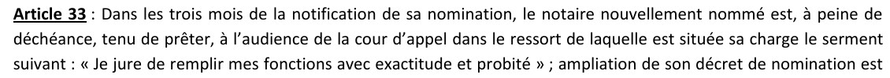
Statut du notariat, article 33
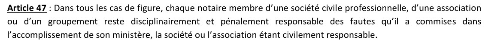
Statut du notariat, article 47
Les faits et les pièces
3 déc. 2010 — décès de Jean Florentin FÉLIHO
30 août 2012 — arrêt n° 28/12 : Maître Lazare CRINOT administrateur
31 oct. 2014 — jugement n° 114/14 : décès le 3 décembre 2010

Déclaration de décès, CNHU-HKM

Communiqué, La Nation, 3 avril 2013
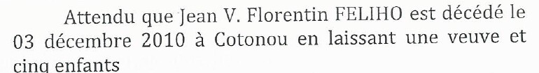
Jugement n° 114/14, page 6
Les faits et les pièces (suite)
10 août 2016 — DMD n° 1428 au répertoire de l'Étude
20 oct. 2016 — certificat d'acquit de droit
20 oct. 2016 — certificat d'acquit de droit
4 août 2023 — sommation (compulsion du répertoire)
7 sept. 2023 — réponse du notaire Félix BALLEY
6 janv. 2025 — observations de la DGI
7 sept. 2023 — réponse du notaire Félix BALLEY
6 janv. 2025 — observations de la DGI
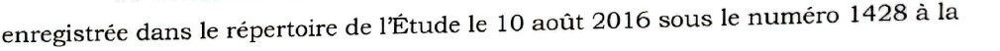
Courrier DGI du 6 janvier 2025, page 2
Les faits et les pièces (suite)
19 mars 2025 — audition du notaire Félix BALLEY (BAC)
28 mai 2025 — mise en demeure à l'administration
28 mai 2025 — mise en demeure à l'administration
Identifier l'acte du notaire Félix BALLEY
Le certificat est délivré par l'Inspecteur de l'enregistrement
(Rodrigue S. DANSOU, 20 octobre 2016)
(Rodrigue S. DANSOU, 20 octobre 2016)
Selon la DGI : « sollicité par l'Étude de Maître Félix A. BALLEY » ; le certificat « reflète les informations portées sur la DMD »

Certificat d'acquit de droit, 20 octobre 2016

Courrier DGI du 6 janvier 2025, page 2
Identifier l'acte du notaire Félix BALLEY (suite)
DMD : répertoire de l'Étude, n° 1428, page 128, 10 août 2016
Répertoire clos le 7 octobre 2016, n° 1492, page 132
Répertoire clos le 7 octobre 2016, n° 1492, page 132
Pièces absentes du dossier
La DMD · l'extrait du répertoire n° 1428
La DMD · l'extrait du répertoire n° 1428
Premier manquement : l'exactitude de la date
CGI, art. 438 : délai de six mois à compter du décès, si le décès est arrivé au Bénin
Décès : 3 décembre 2010
Limite légale : 3 juin 2011
Limite légale : 3 juin 2011
+ 5 ans et 2 mois de retard
(déclaration du 10 août 2016)
(déclaration du 10 août 2016)
Jugement n° 114/14, page 6
Premier manquement : l'exactitude de la date (suite)
Certificat : décès « le dix juin deux mil seize »
Écart : 2 mois, « dans le délai »
Écart : 2 mois, « dans le délai »
Un décès en juin 2016 est impossible : le jugement du 31 octobre 2014 statue déjà sur la succession
Art. 1er + art. 33 : « assurer la date » · exactitude et probité

Certificat d'acquit de droit
Deuxième manquement : la qualité de mandataire
« agissant en qualité de mandataire et au nom des héritiers suivants » — dont Gilles Sixte FÉLIHO
Code civil, art. 1984 : « un acte par lequel une personne donne à une autre le pouvoir de faire quelque chose pour le mandant et en son nom »
Statut, art. 61 : procuration annexée à l'acte ou déposée au rang des minutes
Certificat d'acquit de droit
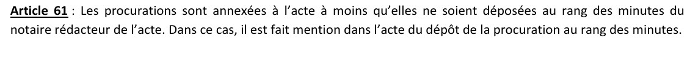
Statut du notariat, article 61
Deuxième manquement : la qualité de mandataire (suite)
Aucun mandat produit
Gilles FÉLIHO « allègue n'y avoir jamais été associé » (DGI)
Gilles FÉLIHO « allègue n'y avoir jamais été associé » (DGI)
Mise en demeure du 28 mai 2025 : « la preuve écrite du mandat »
Sans réponse
Sans réponse
« la délivrance d'actes auxquels il n'est pas partie »

Mise en demeure du 28 mai 2025

Lettre du notaire Félix BALLEY, 7 septembre 2023
Deuxième manquement : la qualité de mandataire (suite)
Mandataire de Gilles FÉLIHO
ou tiers à ses actes ?
ou tiers à ses actes ?
PV : « Le dossier m'a été transmis par l'ensemble de la succession sauf lui »
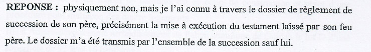
PV d'audition du 19 mars 2025, page 2/5
Deuxième manquement : la qualité de mandataire (suite)
1. Certificat : mandataire
2. Lettre du 7 sept. 2023 : tiers non partie
3. PV du 19 mars 2025 : « son nom était contenu dans le testament »
2. Lettre du 7 sept. 2023 : tiers non partie
3. PV du 19 mars 2025 : « son nom était contenu dans le testament »
L'absence de titre du notaire Félix BALLEY dans la succession
PV : « dont j'ai été saisi d'une exécution partielle »
Dépositaire : Maître Irène ADJAGBA ICHOLA
PV de lecture 2012 · courriel du 21/11/2013
Le notaire Félix BALLEY n'y figure pas
PV de lecture 2012 · courriel du 21/11/2013
Le notaire Félix BALLEY n'y figure pas
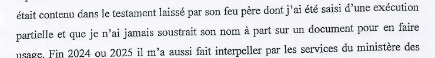
PV d'audition, page 5/5
L'absence de titre du notaire Félix BALLEY dans la succession (suite)
Administrateur : Maître Lazare CRINOT (arrêt n° 28/12)
Le notaire Félix BALLEY n'y figure pas
Le notaire Félix BALLEY n'y figure pas
Communiqué, La Nation, 3 avril 2013
L'absence de titre du notaire Félix BALLEY dans la succession (suite)
Liquidatrice : Honorine BAH (ordonnance n° 842/2013)
Jamais signifiée à Gilles FÉLIHO · jamais portée à sa connaissance
Aucune signification produite : la preuve incombe à celui qui se prévaut de l'ordonnance
Le notaire Félix BALLEY n'y figure pas
Jamais signifiée à Gilles FÉLIHO · jamais portée à sa connaissance
Aucune signification produite : la preuve incombe à celui qui se prévaut de l'ordonnance
Le notaire Félix BALLEY n'y figure pas
L'absence de titre du notaire Félix BALLEY dans la succession (suite)
CPF, art. 940 : le testateur peut nommer un exécuteur testamentaire
Aucune désignation produite
Aucune désignation produite
CPF, art. 941 : saisine des meubles, un an et un jour
CPF, art. 943 : pouvoirs d'un mandataire
CPF, art. 943 : pouvoirs d'un mandataire
L'absence de titre du notaire Félix BALLEY dans la succession (suite)
CPF, art. 944 : inventaire en présence de l'héritier présomptif ou lui dûment appelé
Aucun inventaire produit
Aucun inventaire produit
Des immeubles, en 2016 :
pas une saisine d'exécuteur
pas une saisine d'exécuteur
Troisième manquement : l'inscription au répertoire
Art. 76 : répertoire de tous les actes reçus
Art. 77 : présentation trimestrielle à l'inspecteur
Art. 77 : présentation trimestrielle à l'inspecteur
DMD inscrite : n° 1428, page 128, 10 août 2016
Près de 2 ans après le jugement (31/10/2014)
Plus de 3 ans après le communiqué (03/04/2013)
Plus de 3 ans après le communiqué (03/04/2013)
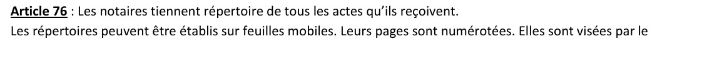
Statut du notariat, article 76
Courrier DGI du 6 janvier 2025
Troisième manquement : l'inscription au répertoire (suite)
La date du 10 juin 2016
impossible à soutenir
impossible à soutenir
DGI : « le Certificat d'Acquit de Droit est authentique »
Rien sur le mandat
Rien sur le mandat
Quatrième manquement : la transparence
Art. 82 : ordonnance requise pour les personnes autres que les intéressés, héritiers ou ayants droit
Gilles FÉLIHO est héritier
Le notaire Félix BALLEY invoque « la confidentialité » et l'absence « d'ordonnance judiciaire »
Le notaire Félix BALLEY invoque « la confidentialité » et l'absence « d'ordonnance judiciaire »
« un exposé de griefs ne nécessitant aucune réponse »
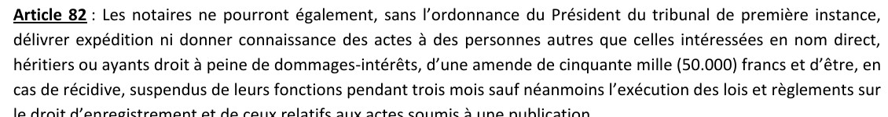
Statut du notariat, article 82
Lettre du 7 septembre 2023
Quatrième manquement : la transparence (suite)
PV : « J'ai ouvert grandement mes portes et mon répertoire à la commission de contrôle »
2023 : accès refusé à un héritier
2025 : répertoire « ouvert » à l'administration
2025 : répertoire « ouvert » à l'administration
Sans réponse de l'administration : les 5 questions de la sommation interpellative · la mise en demeure du 28 mai 2025
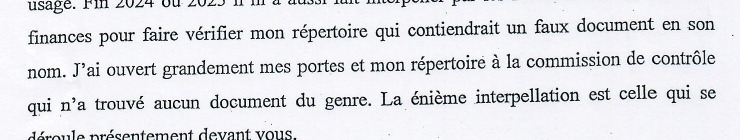
PV d'audition, page 5/5
Cinquième manquement : les déclarations devant la Brigade criminelle
PV n° 2 · 19 mars 2025 · infraction : usage de faux
Soupçonnés : Victorin FADE, Félix BALLEY, Albin FELIHO
Victime : Sixte Giles FELIHO
Soupçonnés : Victorin FADE, Félix BALLEY, Albin FELIHO
Victime : Sixte Giles FELIHO
Pages 3/5 et 4/5 absentes de la copie remise
Analyse limitée aux pages 1, 2/5 et 5/5
Analyse limitée aux pages 1, 2/5 et 5/5
Audition du 19 mars 2025, page 2/5
Cinquième manquement : les déclarations devant la Brigade criminelle (suite)
Jugement : « constate » l'exécution, déclare la demande en nullité irrecevable — il ne mentionne jamais le notaire Félix BALLEY
Jugement n° 114/14, page 8 : « Constate que Gilles Sixte FELIHO a exécuté les dispositions testamentaires de manière volontaire »
Aucun acte de vente · aucun rédacteur de l'acte · aucun acquéreur · aucune date · aucun prix
Aucun acte de vente · aucun rédacteur de l'acte · aucun acquéreur · aucune date · aucun prix
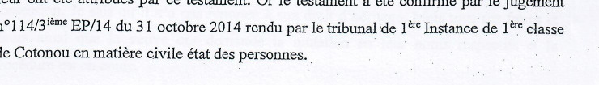
PV d'audition, page 2/5
Cinquième manquement : les déclarations devant la Brigade criminelle (suite)
Mairie de Cotonou, 23 février 2018 : superficie néant
IGN : aucun document afférent à la parcelle B du lot 488
Procès-verbal de compulsion, 19 et 21 décembre 2017
IGN : aucun document afférent à la parcelle B du lot 488
Procès-verbal de compulsion, 19 et 21 décembre 2017
Lettre du 19 septembre 2007 : parcelle B du lot 923, dont Gilles FÉLIHO est propriétaire
Antérieure au décès du 3 décembre 2010 · aucun acte post-mortem établi
Antérieure au décès du 3 décembre 2010 · aucun acte post-mortem établi
Cinquième manquement : les déclarations devant la Brigade criminelle (suite)
« les montants utilisés relevaient des estimations faites par leur feu père » — sans pièce-source
« le système fiscal béninois est déclaratif »
Ne répond pas à la date de décès
Ne répond pas à la date de décès
« je n'ai jamais soustrait son nom à part sur un document pour en faire usage » — le certificat porte ce nom
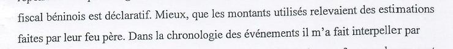
PV d'audition, page 5/5
PV d'audition, page 5/5
Cinquième manquement : les déclarations devant la Brigade criminelle (suite)
« aucun document du genre » ≠ DMD retrouvée, n° 1428 (DGI)
« un procès-verbal a été rédigé et je vous porterai copie »
Non produit
Non produit
2017 : interpellation « verbale »
Aucune pièce produite
Aucune pièce produite
Cinquième manquement : les déclarations devant la Brigade criminelle (suite)
19 juin 2024 : « son action fait suite à une décision de justice devenue exécutoire » qui « l'oblige à consulter les dossiers »
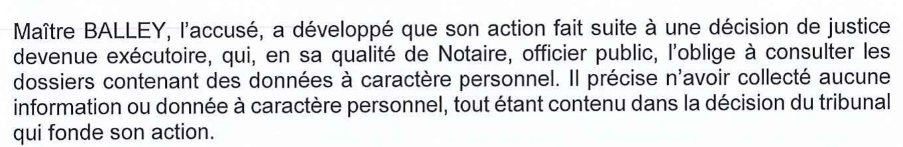
Procès-verbal de séance de l'APDP, 19 juin 2024, page 3/3
Cinquième manquement : les déclarations devant la Brigade criminelle (suite)
Jugement n° 114/14 : aucun ordre adressé à un notaire · le notaire Félix BALLEY n'y figure pas
APDP, 2024 : une décision de justice
Brigade criminelle, 2025 : une exécution partielle
Certificat : un mandat
APDP, 2024 : une décision de justice
Brigade criminelle, 2025 : une exécution partielle
Certificat : un mandat
Cinquième manquement : les déclarations devant la Brigade criminelle (suite)
« aucune donnée collectée, tout étant contenu dans la décision »
Jugement : 39 immeubles · 567 990 000 FCFA · décès le 3 décembre 2010
Certificat : 7 immeubles · 138 300 000 FCFA · décès le 10 juin 2016
Ces données ne sont pas dans la décision
Jugement : 39 immeubles · 567 990 000 FCFA · décès le 3 décembre 2010
Certificat : 7 immeubles · 138 300 000 FCFA · décès le 10 juin 2016
Ces données ne sont pas dans la décision
Cinquième manquement : les déclarations devant la Brigade criminelle (suite)
Son avocat : faits « antérieurs » au code · excuses pour « l'ignorance de l'obligation légale de mise en conformité »
≠ « aucune donnée collectée »
≠ « aucune donnée collectée »
Protection des données ≠ mandat
Le mandat relève du seul consentement de Gilles FÉLIHO
Le mandat relève du seul consentement de Gilles FÉLIHO
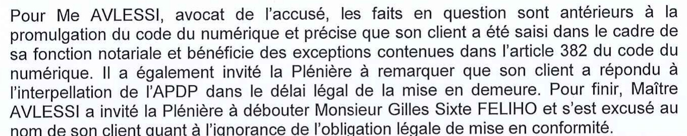
Procès-verbal de séance de l'APDP, 19 juin 2024, page 3/3
Cinquième manquement : les déclarations devant la Brigade criminelle (suite)
Corps du PV : « L'an deux mil vingt-quatre et le mercredi dix-neuf mars »
En-tête : 19 mars 2025 (un mercredi)
Erreur de rédaction de l'OPJ, non imputable au notaire Félix BALLEY
En-tête : 19 mars 2025 (un mercredi)
Erreur de rédaction de l'OPJ, non imputable au notaire Félix BALLEY
Le constat d'huissier du 29 juillet 2022 : l'« exécution partielle » à l'épreuve des faits
29 juillet 2022 — procès-verbal de constat avec interpellation
Maître Marc O. A. Orekan, huissier de justice, à Cotonou
Maître Marc O. A. Orekan, huissier de justice, à Cotonou
Objet : constater l'occupation des appartements « qu'il a hérité de son feu père »
Désignation donnée par le requérant
Désignation donnée par le requérant
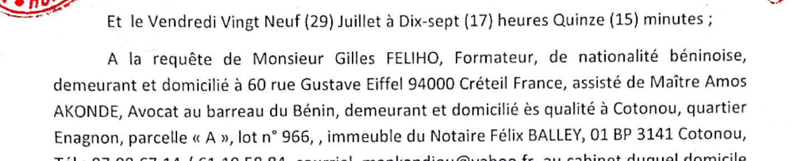
Constat d'huissier du 29 juillet 2022, page 1
Le constat d'huissier du 29 juillet 2022 : l'« exécution partielle » à l'épreuve des faits (suite)
Occupant : société VISSIM
Déclaration d'un employé : bail « auprès de la société évènementiel »
Déclaration d'un employé : bail « auprès de la société évènementiel »
Siège de la société évènementiel : 3e étage
Directeur Général et adjoint absents — aucune interpellation
Directeur Général et adjoint absents — aucune interpellation
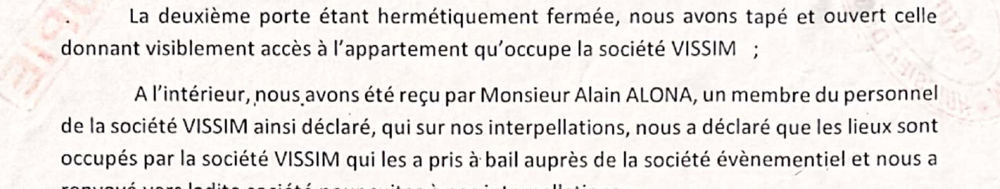
Constat d'huissier, page 2
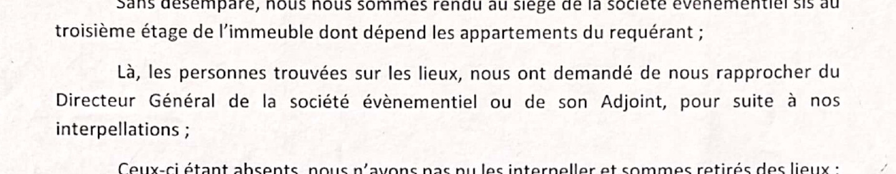
Constat d'huissier, page 2
Le constat d'huissier du 29 juillet 2022 : l'« exécution partielle » à l'épreuve des faits (suite)
Établi : occupation par VISSIM ; bail déclaré, consenti par la société évènementiel
Selon Gilles Féliho : la société évènementiel appartient à Albin FELIHO
Selon Gilles Féliho : la société évènementiel appartient à Albin FELIHO
Non établi par le constat
Le bail n'est pas produit
Propriétaire de la société évènementiel : absent du procès-verbal
Le notaire Félix BALLEY n'y est pas mentionné
Le bail n'est pas produit
Propriétaire de la société évènementiel : absent du procès-verbal
Le notaire Félix BALLEY n'y est pas mentionné
Le constat d'huissier du 29 juillet 2022 : l'« exécution partielle » à l'épreuve des faits (suite)
Un bien légué à Gilles FÉLIHO,
loué à son insu par la société évènementiel.
De quelle « exécution partielle » le notaire Félix BALLEY a-t-il été saisi ?
loué à son insu par la société évènementiel.
De quelle « exécution partielle » le notaire Félix BALLEY a-t-il été saisi ?
Le constat d'huissier du 29 juillet 2022 : l'« exécution partielle » à l'épreuve des faits (suite)
À obtenir : bail · titre foncier · registre du commerce de la société évènementiel · acte de « l'exécution partielle »
La qualification : textes à vérifier sur le texte officiel
À vérifier
Textes à contrôler sur le texte officiel de l'ancien code pénal (code Bouvenet), applicable en 2016
Textes à contrôler sur le texte officiel de l'ancien code pénal (code Bouvenet), applicable en 2016
Art. 145 : faux de l'officier public dans une écriture publique, y compris écritures faites ou intercalées dans des registres
La qualification : textes à vérifier sur le texte officiel (suite)
Art. 146 : « en constatant comme vrais des faits faux, ou comme avérés des faits qui ne l'étaient pas »
Art. 148 : usage de l'acte faux
Art. 153 et 154 numérotation à vérifier
La qualification : textes à vérifier sur le texte officiel (suite)
1. Irrégularité formelle
2. Faute professionnelle (civile, disciplinaire)
3. Faux intentionnel (pénal)
2. Faute professionnelle (civile, disciplinaire)
3. Faux intentionnel (pénal)
Éléments : altération frauduleuse · écrit protégé · préjudice possible
Intention à établir
Intention à établir
Thèse : le jugement (2014) et le communiqué (2013) rendaient la date de 2016 impossible à ignorer
La qualification : textes à vérifier sur le texte officiel (suite)
Déclaration d'une partie
≠ constatation personnelle de l'officier public
≠ constatation personnelle de l'officier public
Les voies de contrôle et les sanctions prévues par le statut
Art. 88 et 89 : surveillance du procureur général ; représentation du répertoire et de tout document utile
Art. 117 : poursuite par le procureur général, même sans partie plaignante
Art. 8 : réclamations des tiers examinées par le bureau de la Chambre nationale
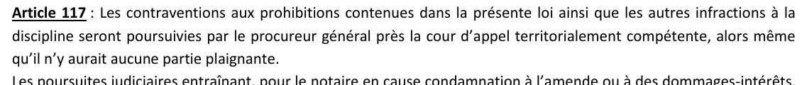
Statut du notariat, article 117
Les voies de contrôle et les sanctions prévues par le statut (suite)
Art. 112-113 : rappel à l'ordre · censure · suspension (1 an au plus) · destitution
Les limites du dossier et les pièces à obtenir
1. La DMD
2. Extrait du répertoire n° 1428, p. 128 (clôture n° 1492, p. 132)
2. Extrait du répertoire n° 1428, p. 128 (clôture n° 1492, p. 132)
3. Procuration éventuelle
4. PV de vérification de l'enregistrement
4. PV de vérification de l'enregistrement
5. Pages 3/5 et 4/5 du PV d'audition
6. Texte officiel de l'ancien code pénal
6. Texte officiel de l'ancien code pénal
Les limites du dossier et les pièces à obtenir (suite)
7. Décret de nomination : résidence fixée (art. 35-36)
PV : Abomey-Calavi · cachet : Comé — à vérifier
PV : Abomey-Calavi · cachet : Comé — à vérifier
Conclusion
1 · Exactitude : date de décès fausse de 5 ans et demi
2 · Qualité : mandataire sans mandat, contredit le 7 septembre 2023
3 · Répertoire : inscription postérieure aux pièces qui l'infirment
4 · Transparence : refus opposé à un héritier
Conclusion (suite)
5 · Déclarations : justifications successives, contredites par les pièces
Conclusion (suite)
Le notaire Félix BALLEY a juré l'exactitude et la probité.
Le certificat et son comportement sont contraires aux textes en vigueur.
Le certificat et son comportement sont contraires aux textes en vigueur.
Conclusion (suite)
Sensibiliser. Exiger des comptes.
wadagni2026-verite.com
wadagni2026-verite.com